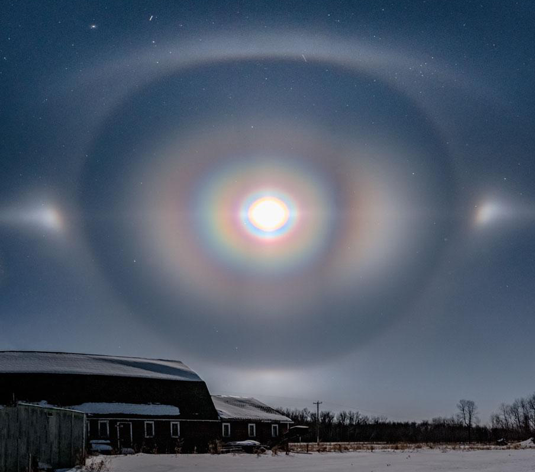

Hearth and the plumb are seeking artworks for a group exhibition tentatively titled "Moonshow", a seasonal collaboration set to run from January 9th - February 7th, 2021 on site at the plumb.
Our Moon drapes the nighttime in mirrored, reflected light, guiding our interpretive understandings of both conscious and subconscious experience. Deeply connected to human projections and aspirations, the Moon is subject to an array of encounters - from scientific to spiritual, from our personal histories to our collective histories, of bodies of water and flesh.
We are interested in works that consider the moon through various streams of associations:
How does the Moon underlie our understanding of cycles, both within and outside of ourselves?
How does the Moon inform the line between waking hours and sleep?
How has it been depicted in folklore, mythology and science fiction?
What role does the Moon play in conversations about geography, topology, colonialism and power?
In what ways are we inspired by the Moon’s reflective qualities?
DEADLINE: SATURDAY DECEMBER 5TH, 2020 at 11:59PM.
The following is a list of recommended documents to include:
1. 5 - 10 images and/or videos of previous and/or proposed work.
2. A proposal describing the work (min 150 words)
3. An artist statement describing your practice (min 50 words)
4. A C.V detailing your relevant experiences (optional)
As we acknowledge that proposal writing can be an inaccessible process, we have no mandatory requirements for submissions, but please keep in mind that you’re introducing yourself and your project to an uninitiated audience!
SUBMISSION PROCESS
- Please send submissions by e-mail to hearthgarage@gmail.com
- Please compile your documents into a single PDF or a .zip folder.
- Video can be sent separately using WeTransfer or Dropbox, or links to video material on sharing platforms (Vimeo, Youtube, etc.).
- Images can be included as an attachment to the email in .jpg format.
Works must be ready for exhibition by January, 2021. All applicants will be notified by mid December 2020.
Submissions of artworks in any and all mediums are welcomed and encouraged. This exhibition prioritizes artists that are Indigenous, Black, people of color, women, LGBTQ2+, people with disabilities, and other marginalized communities.
As both the plumb and Hearth are non-for-profit, volunteer run initiatives, we do not currently receive public or private funding, and cannot provide artist fees. We are readily available to assist artists in the sourcing of external project funding, and are open to other forms of skill-sharing and equitable exchanges with collaborators. We acknowledge the precarity of the artist run-model and the nature of artist opportunities in the city and commit to actively working towards sustainable compensation for collaborators in time.
For more information about the plumb please visit: https://theplumb.ca/
If you have any questions please contact hearthgarage@gmail.com
